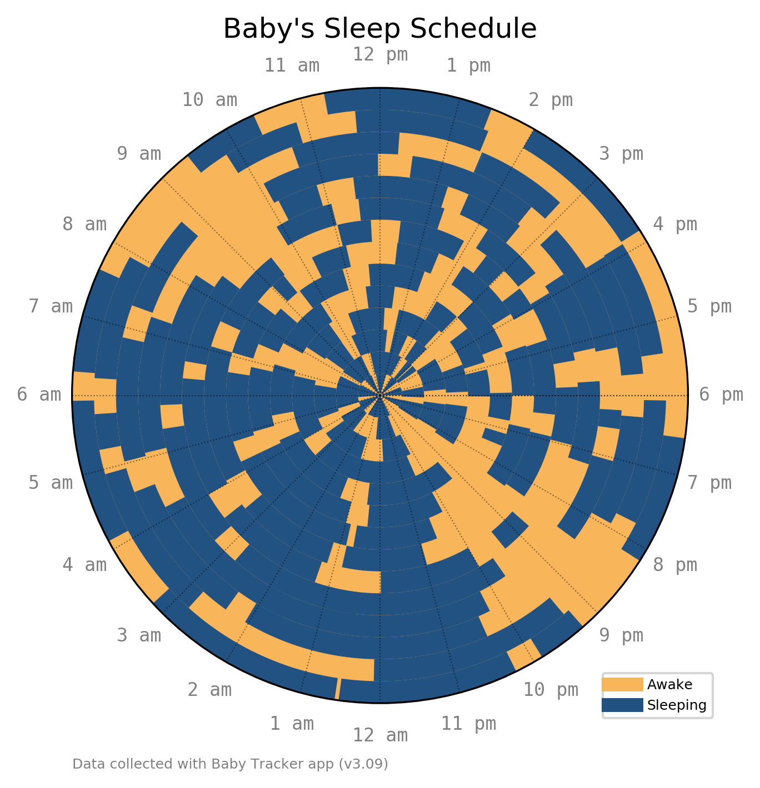

Visualizing An Infant's Schedule

A newborn may only eat, sleep, and poop, but they sure do it a lot! Here is a sample of two weeks of an an infant's schedule visualized with matplotlib.
A while ago I came across a radial sleep schedule plot and thought it was a creative way to visualize this type of data.
300 days of a baby's sleeping data. #dataviz
— Randy Olson (@randal_olson) October 22, 2017
One continuous spiral starting on the inside, each revolution representing a single day. Midnight is at the top, midday at the bottom (24 hour clock). Orange represents wake periods, blue represents sleep.https://t.co/AJ9zwRYn7K pic.twitter.com/fgQimcNrUD
Since my wife and I have been tracking data for use with the doctor already using the Baby Tracker app, and since it has a convenient exoprt to csv feature, I decided to make a similar chart.
To export the data from the Baby Tracker app go to Settings > Export Data to CSV.

This will generate a csv.zip file that you can email to yourself. Unzipping the file gives one csv for each category: sleep, nursing, diaper, etc.
Using sleep as an example, we start by loading the data into a Pandas DataFrame:
{% notebook downloads/code/baby-schedule/baby-notebook.ipynb cells[0:1] %}
This gives us the start time and duration of each period of sleep. Our matplotlib chart is a bar chart on a polar projection. Therefore, we need to define the center, thickness, width, bottom of each bar:
- center is the midpoint of the nap, or
(end time - start time) / 2, which we then convert to polar coordinates and offset so midnight is at the bottom - thickness is a constant, we use 1
- width is the duration of the nap converted to polar coordinates and rotated
- bottom is the radial position of the bar, which corresponds to the date since each "ring" on the chart is a day
Putting this together with some hour labels, we get a simple chart of baby's sleep pattern over two weeks:

Nursing time has a similar duration, and different colored bars can be added in the same manner. Other data such as diapers are single events without a duration:
{% notebook downloads/code/baby-schedule/baby-notebook.ipynb cells[1:2] %}
For these, we plot a simple point instead of a bar. Adding a nice legend and a some story time, we get the final chart:
Here is the full code (or download here):
import pandas as pd
import numpy as np
import matplotlib.pyplot as plt
from matplotlib.patches import Patch
from matplotlib.lines import Line2D
def data_sleep(path):
# read data
sleep = pd.read_csv(path,
parse_dates=[1])
sleep['DateTime'] = sleep['Time']
sleep['Date'] = sleep['DateTime'].dt.date
sleep['Time'] = sleep['DateTime'].dt.time
# get bottom
sleep['bottom'] = (sleep['Date']-min(sleep['Date'])).astype(str)
sleep['bottom'] = (sleep['bottom'].str.split(' ').str.get(0)).astype(int)
# get minutes
sleep['minutes'] = sleep['Time'].astype(str).str.split(':').apply(lambda x: int(x[0]) * 60 + int(x[1]))
return sleep
def data_nurse(path):
# read data
nurse = pd.read_csv(path,
parse_dates=[1])
nurse['DateTime'] = nurse['Time']
nurse['Date'] = nurse['DateTime'].dt.date
nurse['Time'] = nurse['DateTime'].dt.time
# get duration
nurse['Total Duration'] = nurse['Left duration'] + nurse['Right duration']
# get bottom
nurse['bottom'] = (nurse['Date']-min(nurse['Date'])).astype(str)
nurse['bottom'] = (nurse['bottom'].str.split(' ').str.get(0)).astype(int)
# get minutes
nurse['minutes'] = nurse['Time'].astype(str).str.split(':').apply(lambda x: int(x[0]) * 60 + int(x[1]))
return nurse
def data_diaper(path):
# read data
diaper = pd.read_csv(path,
parse_dates=[1])
diaper['DateTime'] = diaper['Time']
diaper['Date'] = diaper['DateTime'].dt.date
diaper['Time'] = diaper['DateTime'].dt.time
# get bottom
diaper['bottom'] = (diaper['Date']-min(diaper['Date'])).astype(str)
diaper['bottom'] = (diaper['bottom'].str.split(' ').str.get(0)).astype(int)
# get minutes
diaper['minutes'] = diaper['Time'].astype(str).str.split(':').apply(lambda x: int(x[0]) * 60 + int(x[1]))
return diaper
def data_story(path):
# read data
story = pd.read_csv(path,
parse_dates=[1])
story = story[story['Other activity']=='Story Time']
story['DateTime'] = story['Time']
story['Date'] = story['DateTime'].dt.date
story['Time'] = story['DateTime'].dt.time
# get bottom
story['bottom'] = (story['Date']-min(story['Date'])).astype(str)
story['bottom'] = (story['bottom'].str.split(' ').str.get(0)).astype(int)
# get minutes
story['minutes'] = story['Time'].astype(str).str.split(':').apply(lambda x: int(x[0]) * 60 + int(x[1]))
return story
def plot_sleep_radial(sleep):
ax = plt.subplot(111, projection='polar')
ax.set_facecolor('#F8B55A') # awake time background
# turn axes off
ax.axes.get_xaxis().set_visible(False)
ax.axes.get_yaxis().set_visible(False)
# sleep time
for row in range(sleep.shape[0]):
duration = sleep.loc[sleep.index[row],'Duration(minutes)']
minutes = sleep.loc[sleep.index[row],'minutes']
bottom = sleep.loc[sleep.index[row],'bottom']
width = duration / 60 / 24 * 2 * np.pi
center = ( -(minutes+duration/2) / 60 / 24 * 2 * np.pi) - np.pi/2
bars = ax.bar(center, 1, width=width, bottom=bottom, color='#225282')
# hour marks
x = np.linspace(0,np.pi*2,num=25)
hr = ['6 pm','5 pm','4 pm','3 pm','2 pm','1 pm','12 pm',
'11 am','10 am','9 am','8 am','7 am','6 am',
'5 am','4 am','3 am','2 am','1 am','12 am',
'11 pm','10 pm','9 pm','8 pm','7 pm','']
for i in range(len(x)):
plt.plot([0,x[i]],[0,bottom+1],'k:',lw=.5,alpha=.5)
plt.text(x[i],bottom+2.5,hr[i],ha='center',va='center', color='grey',
fontsize=8, family='monospace')
# annotation
ax.annotate('Data collected with Baby Tracker app (v3.09)', xy=(0, 0),
xycoords='figure fraction', xytext=(0.0, -0.1), textcoords='axes fraction',
horizontalalignment='left', verticalalignment='center', fontsize=6, color='grey')
# legend
legend_elements = [Line2D([0], [0], color='#F8B55A', lw=6, label='Awake'),
Line2D([0], [0], color='#225282', lw=6, label='Sleeping')]
ax.legend(handles=legend_elements, loc='upper left', bbox_to_anchor=(.85, .06), fontsize=6)
plt.title('Baby\'s Sleep Schedule', va='bottom')
plt.ylim(ymax=bottom+1)
plt.savefig('plot_sleep_radial.png', bbox_inches='tight', dpi=300)
def plot_all_radial(sleep, nurse, diaper, story):
ax = plt.subplot(111, projection='polar')
ax.set_facecolor('#F8B55A') # awake time background
# turn axes off
ax.axes.get_xaxis().set_visible(False)
ax.axes.get_yaxis().set_visible(False)
# sleep time
for row in range(sleep.shape[0]):
duration = sleep.loc[sleep.index[row],'Duration(minutes)']
minutes = sleep.loc[sleep.index[row],'minutes']
bottom = sleep.loc[sleep.index[row],'bottom']
width = duration / 60 / 24 * 2 * np.pi
center = ( -(minutes+duration/2) / 60 / 24 * 2 * np.pi) - np.pi/2
bars = ax.bar(center, 1, width=width, bottom=bottom, color='#225282')
# nurse time
for row in range(nurse.shape[0]):
duration = nurse.loc[nurse.index[row],'Total Duration']
minutes = nurse.loc[nurse.index[row],'minutes']
bottom = nurse.loc[nurse.index[row],'bottom']
width = duration / 60 / 24 * 2 * np.pi
center = ( -(minutes+duration/2) / 60 / 24 * 2 * np.pi) - np.pi/2
bars = ax.bar(center, 1, width=width, bottom=bottom, color='#f85a9d')
# dirty diapers
for row in range(diaper.shape[0]):
bottom = diaper.loc[diaper.index[row],'bottom']
minutes = diaper.loc[diaper.index[row],'minutes']
center = ( -minutes / 60 / 24 * 2 * np.pi) - np.pi/2
plt.plot(center, bottom+.5, marker='o', markersize=3, color="#825222",
markeredgecolor='white', markeredgewidth=.2)
# story time
for row in range(story.shape[0]):
bottom = story.loc[story.index[row],'bottom']
minutes = story.loc[story.index[row],'minutes']
center = ( -minutes / 60 / 24 * 2 * np.pi) - np.pi/2
plt.plot(center, bottom+.5, marker='o', markersize=3, color="#5aecf8",
markeredgecolor='white', markeredgewidth=.2)
# hour marks
x = np.linspace(0,np.pi*2,num=25)
hr = ['6 pm','5 pm','4 pm','3 pm','2 pm','1 pm','12 pm',
'11 am','10 am','9 am','8 am','7 am','6 am',
'5 am','4 am','3 am','2 am','1 am','12 am',
'11 pm','10 pm','9 pm','8 pm','7 pm','']
for i in range(len(x)):
plt.plot([0,x[i]],[0,bottom+1],'k:',lw=.5,alpha=.5)
plt.text(x[i],bottom+2.5,hr[i],ha='center',va='center', color='grey',
fontsize=8, family='monospace')
# annotation
ax.annotate('Data collected with Baby Tracker app (v3.09)', xy=(0, 0),
xycoords='figure fraction', xytext=(0.0, -0.1), textcoords='axes fraction',
horizontalalignment='left', verticalalignment='center', fontsize=6, color='grey')
# legend
legend_elements = [Line2D([0], [0], color='#F8B55A', lw=6, label='Awake'),
Line2D([0], [0], color='#225282', lw=6, label='Sleeping'),
Line2D([0], [0], color='#f85a9d', lw=6, label='Nursing'),
Line2D([0], [0], marker='o', color='#825222', label='Diaper',
markeredgecolor='w', markersize=7),
Line2D([0], [0], marker='o', color='#5aecf8', label='Story Time',
markeredgecolor='w', markersize=7)]
ax.legend(handles=legend_elements, loc='upper left', bbox_to_anchor=(.85, .06), fontsize=6)
plt.title('Baby\'s Schedule', va='bottom')
plt.ylim(ymax=bottom+1)
plt.savefig('plot_all_radial.png', bbox_inches='tight', dpi=300)
sleep = data_sleep('Baby1_sleep.csv')
nurse = data_nurse('Baby1_nursing.csv')
diaper = data_diaper('Baby1_diaper.csv')
story = data_story('Baby1_other_activity.csv')
plot_sleep_radial(sleep)
plot_all_radial(sleep, nurse, diaper, story)
- You can view the original code and files.
Library versions:
matplotlib 2.2.2
pandas 0.22.0
Python 3.6.3